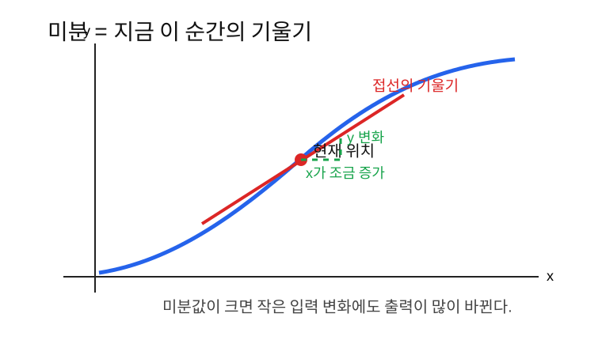
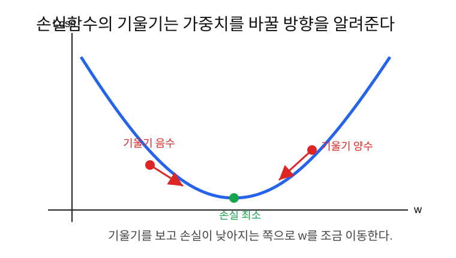
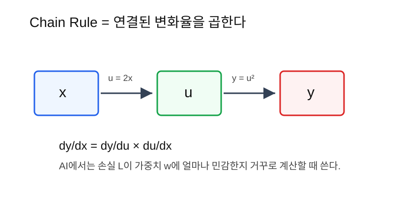

미분은 입력이 아주 조금 바뀔 때 출력이 얼마나 바뀌는지 보는 방법이고, AI에서는 손실을 줄이기 위해 가중치를 어느 방향으로 바꿀지 알려준다.
AI 학습은 손실함수를 줄이는 과정이다.
예측 -> 손실 계산 -> 손실을 줄이는 방향 찾기 -> 가중치 수정여기서 “손실을 줄이는 방향”을 찾을 때 미분이 필요하다.
예를 들어 가중치 w를 조금 키웠더니 손실이 커졌다면,
다음에는 w를 줄여야 한다. 반대로 w를 키웠더니
손실이 작아졌다면, w를 더 키워볼 수 있다.
미분은 이 판단을 숫자로 해준다.
미분은 변화에 대한 민감도다.
입력이 조금 바뀌면 출력이 얼마나 바뀌는가?예를 들어 자동차 속도를 생각해 보자.
| 시간 | 이동 거리 |
|---|---|
| 0초 | 0m |
| 1초 | 10m |
| 2초 | 20m |
1초마다 10m씩 이동한다면 속도는 다음과 같다.
속도 = 거리 변화 / 시간 변화 = 10m / 1초 = 10m/s이것도 변화율이다.
미분은 이 생각을 더 작게 쪼개서 “바로 지금 순간의 변화율”을 보는 것이다.

평균 변화율은 두 지점 사이의 전체 변화다.
평균 변화율 = y의 변화량 / x의 변화량예를 들어 x가 1에서 3으로 바뀔 때 y가 2에서
10으로 바뀌었다면,
평균 변화율 = (10 - 2) / (3 - 1) = 8 / 2 = 4순간 변화율은 한 점에서의 기울기다. 이것이 미분이다.
미분값 = 그 점에서의 기울기직선에서는 모든 지점의 기울기가 같다. 하지만 곡선에서는 위치마다 기울기가 다르다.
가장 쉬운 함수부터 보자.
y = 3x + 2이 함수는 x가 1 증가할 때 y가 3
증가한다.
그래서 기울기는 3이다.
dy/dx = 3dy/dx는 이렇게 읽으면 된다.
x가 조금 바뀔 때 y가 얼마나 바뀌는가?즉 y = 3x + 2는 어디에서 보아도 미분값이 3이다.
이번에는 곡선을 보자.
y = x^2이 함수의 미분은 다음과 같다.
dy/dx = 2x여기서 중요한 점은 미분값이 x에 따라 달라진다는
것이다.
| x | y = x^2 | dy/dx = 2x | 뜻 |
|---|---|---|---|
| 1 | 1 | 2 | 완만하게 증가 |
| 2 | 4 | 4 | 더 빠르게 증가 |
| 3 | 9 | 6 | 훨씬 빠르게 증가 |
즉 x가 클수록 그래프가 더 가파르게 올라간다.
가장 단순한 모델을 보자.
y_hat = wx + b여기서 w가 조금 바뀌면 예측값 y_hat도
바뀐다.
예를 들어,
x = 3
b = 0
y_hat = 3w그러면 w가 1 증가할 때 y_hat은 3
증가한다.
dy_hat/dw = 3즉 입력 x가 클수록 가중치 w의 변화가
예측값에 더 큰 영향을 준다.
AI는 예측값이 아니라 손실을 줄이고 싶다.
실제값을 y, 예측값을 y_hat이라고 하면
간단한 손실은 다음처럼 쓸 수 있다.
L = (y_hat - y)^2예를 들어 실제값이 10이고 예측값이 7이면,
L = (7 - 10)^2 = 9예측값이 8이면,
L = (8 - 10)^2 = 4손실이 줄었다. 즉 예측값이 실제값에 가까워졌다.
미분은 w를 바꾸면 L이 어떻게 바뀌는지
알려준다.
dL/dw = w가 조금 바뀔 때 손실 L이 얼마나 바뀌는가?
손실함수의 기울기는 방향을 알려준다.
| 기울기 | 의미 | 해야 할 일 |
|---|---|---|
| 양수 | w를 키우면 손실이 커진다 | w를 줄인다 |
| 음수 | w를 키우면 손실이 작아진다 | w를 키운다 |
| 0 근처 | 더 움직여도 손실 변화가 작다 | 최소점 근처일 수 있다 |
그래서 경사하강법은 다음처럼 쓴다.
w_new = w_old - learning_rate * dL/dw여기서 learning_rate는 한 번에 얼마나 움직일지 정하는
작은 숫자다.
딥러닝 모델은 함수 하나가 아니라 여러 함수가 이어진 구조다.
x -> 선형계산 -> ReLU -> 선형계산 -> softmax -> loss손실 L은 맨 마지막에 계산된다. 하지만 우리가 바꾸고 싶은
것은 앞쪽의 가중치들이다.
그래서 이런 질문이 필요하다.
앞쪽 가중치 w가 손실 L에 얼마나 영향을 주는가?이것을 계산할 때 chain rule을 쓴다.

다음처럼 함수가 두 단계로 이어져 있다고 하자.
u = 2x
y = u^2즉 x가 먼저 u를 만들고, u가
다시 y를 만든다.
x -> u -> yx가 y에 미치는 영향은 두 영향을 곱해서
구한다.
dy/dx = dy/du * du/dx각각 계산하면,
du/dx = 2
dy/du = 2u따라서,
dy/dx = 2u * 2 = 4u그런데 u = 2x이므로,
dy/dx = 4 * 2x = 8x실제로 전체 함수를 하나로 합치면,
y = u^2 = (2x)^2 = 4x^2이 함수의 미분은 다음과 같다.
dy/dx = 8x같은 결과가 나온다.
딥러닝에서는 계산이 앞에서 뒤로 진행된다.
입력 -> 예측 -> 손실하지만 미분은 뒤에서 앞으로 계산된다.
손실 -> 마지막 층 -> 이전 층 -> 더 이전 층이 과정을 backpropagation, 즉 역전파라고 부른다.
역전파는 특별한 마법이 아니라 chain rule을 반복해서 적용하는 계산이다.
모델이 다음과 같다고 하자.
y_hat = wx
L = (y_hat - y)^2값은 다음과 같다.
x = 2
w = 3
y = 10먼저 예측값을 계산한다.
y_hat = wx = 3 * 2 = 6손실을 계산한다.
L = (6 - 10)^2 = 16이제 w가 손실에 주는 영향을 계산한다.
L = (y_hat - y)^2
y_hat = wxchain rule:
dL/dw = dL/dy_hat * dy_hat/dw각각 계산하면,
dL/dy_hat = 2(y_hat - y) = 2(6 - 10) = -8
dy_hat/dw = x = 2따라서,
dL/dw = -8 * 2 = -16기울기가 음수다. 이것은 w를 키우면 손실이 줄어든다는
뜻이다.
실제로 w를 3에서 3.1로 키우면,
y_hat = 3.1 * 2 = 6.2
L = (6.2 - 10)^2 = 14.44손실이 16에서 14.44로 줄었다.
x = 2.0
w = 3.0
y = 10.0
y_hat = w * x
loss = (y_hat - y) ** 2
dL_dyhat = 2 * (y_hat - y)
dyhat_dw = x
dL_dw = dL_dyhat * dyhat_dw
print(y_hat) # 6.0
print(loss) # 16.0
print(dL_dw) # -16.0PyTorch 자동미분으로 확인하면 다음과 같다.
import torch
x = torch.tensor(2.0)
w = torch.tensor(3.0, requires_grad=True)
y = torch.tensor(10.0)
y_hat = w * x
loss = (y_hat - y) ** 2
loss.backward()
print(w.grad) # tensor(-16.)| 헷갈리는 말 | 쉽게 풀어쓴 말 |
|---|---|
| 미분 | 입력이 조금 바뀔 때 출력이 얼마나 바뀌는지 |
| 기울기 | 그래프가 그 지점에서 얼마나 가파른지 |
| 손실의 기울기 | 가중치를 바꾸면 손실이 어떻게 변하는지 |
| chain rule | 연결된 함수들의 변화율을 곱하는 법칙 |
| 역전파 | chain rule로 손실의 영향을 뒤에서 앞으로 계산하는 과정 |
| learning rate | 가중치를 한 번에 얼마나 움직일지 정하는 값 |
y = 3x + 2의 미분값은 얼마인가?y = x^2의 미분값은 무엇인가?w를 어느 방향으로 움직여야
하는가?dL/dw는 AI 학습에서 무엇을 의미하는가?미분은 변화에 대한 민감도다. AI에서는 손실이 가중치에 얼마나 민감한지 계산하기 위해 미분을 사용한다. 딥러닝 모델은 여러 함수가 이어진 구조이므로 chain rule이 필요하고, 이 chain rule을 뒤에서 앞으로 반복 적용하는 과정이 역전파다.
다음 노트: 06_그래디언트와역전파 (준비 중)